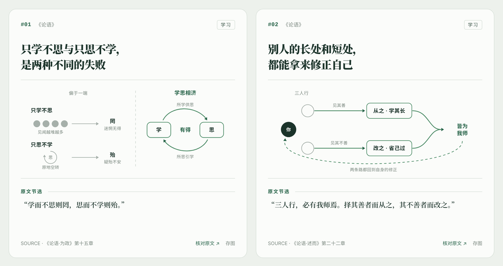
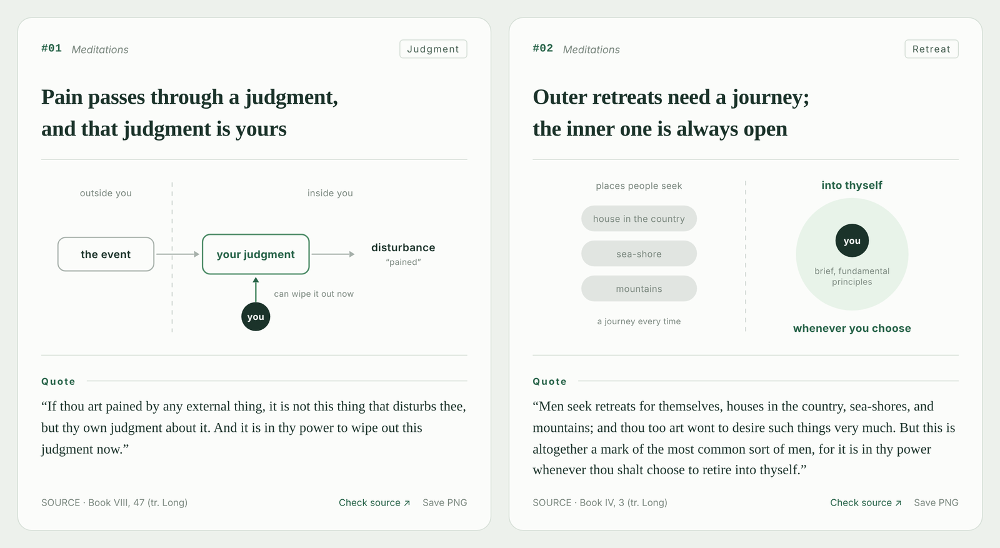

NOTEGLYPH · AGENT SKILL
NoteGlyph 图见
把书和论文里的观点，画成有出处、语义统一的极简机制卡片：一眼能懂，容易记住，还能一张张接着往下做。
Visual notes for books and papers: one claim per card, one mechanism diagram, the source attached.

中文 · 8 条 · 5 张卡
《论语》
学习、施教与做事。原文节选，逐句核对。

English · 6 passages · 4 cards
Meditations
Marcus Aurelius, tr. George Long (1862). Verbatim, public domain.
01
装进你的 Agent
Claude Code、Codex、Cursor 等都能用：npx skills add guoshuqi1212/noteglyph
02
给它一本书或一篇论文
它先核对原文、挑出画得出机制的观点，再按固定的图形语义出卡。
03
拿到网页、数据和图片
单文件 HTML、可续写的 JSON，每张卡都能一键存成 PNG。